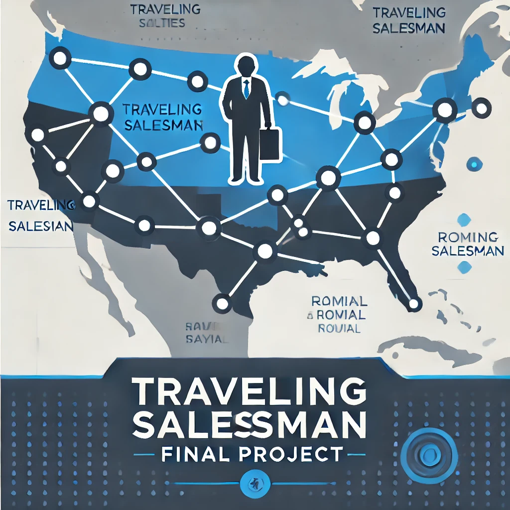
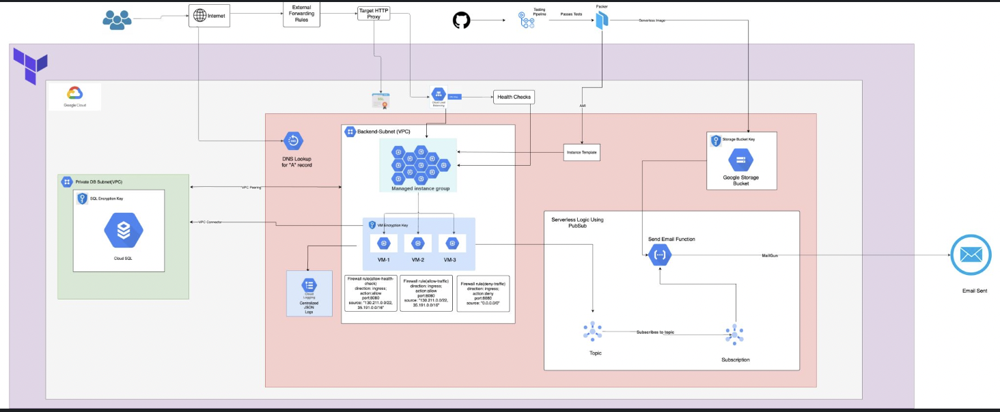
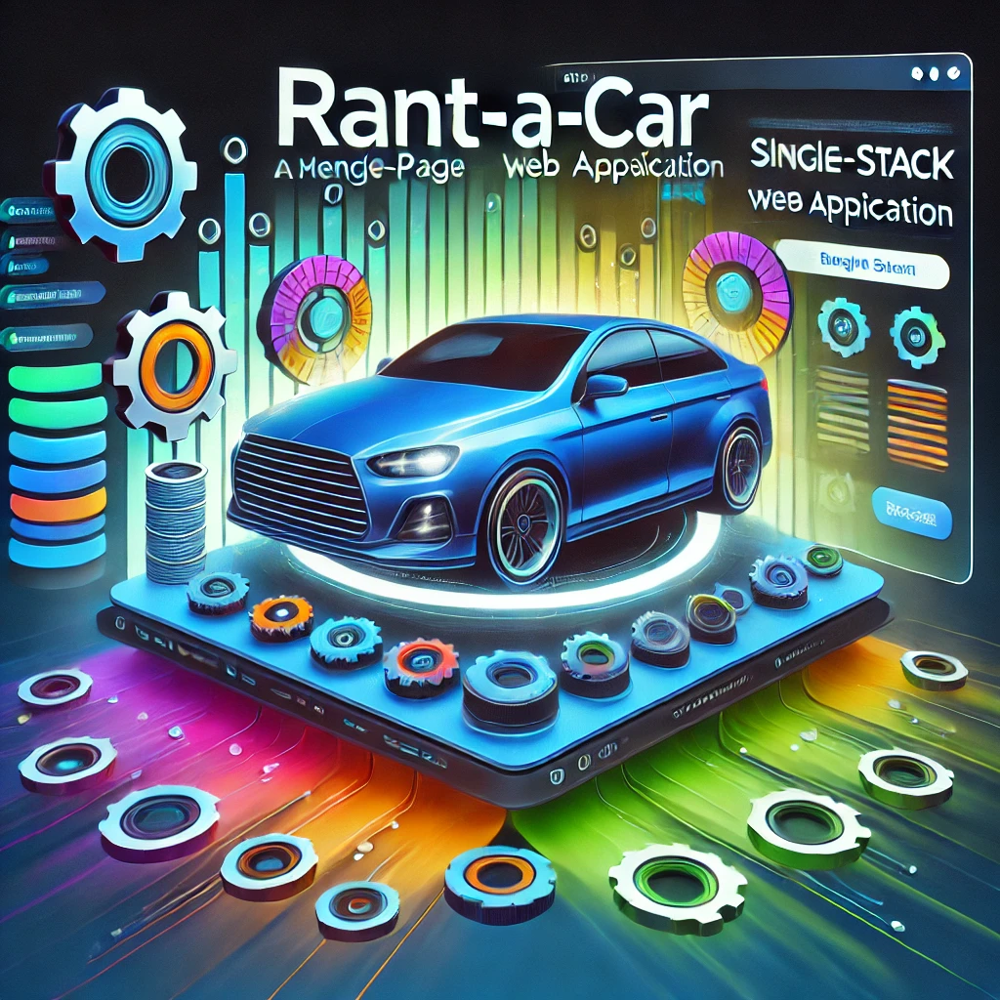
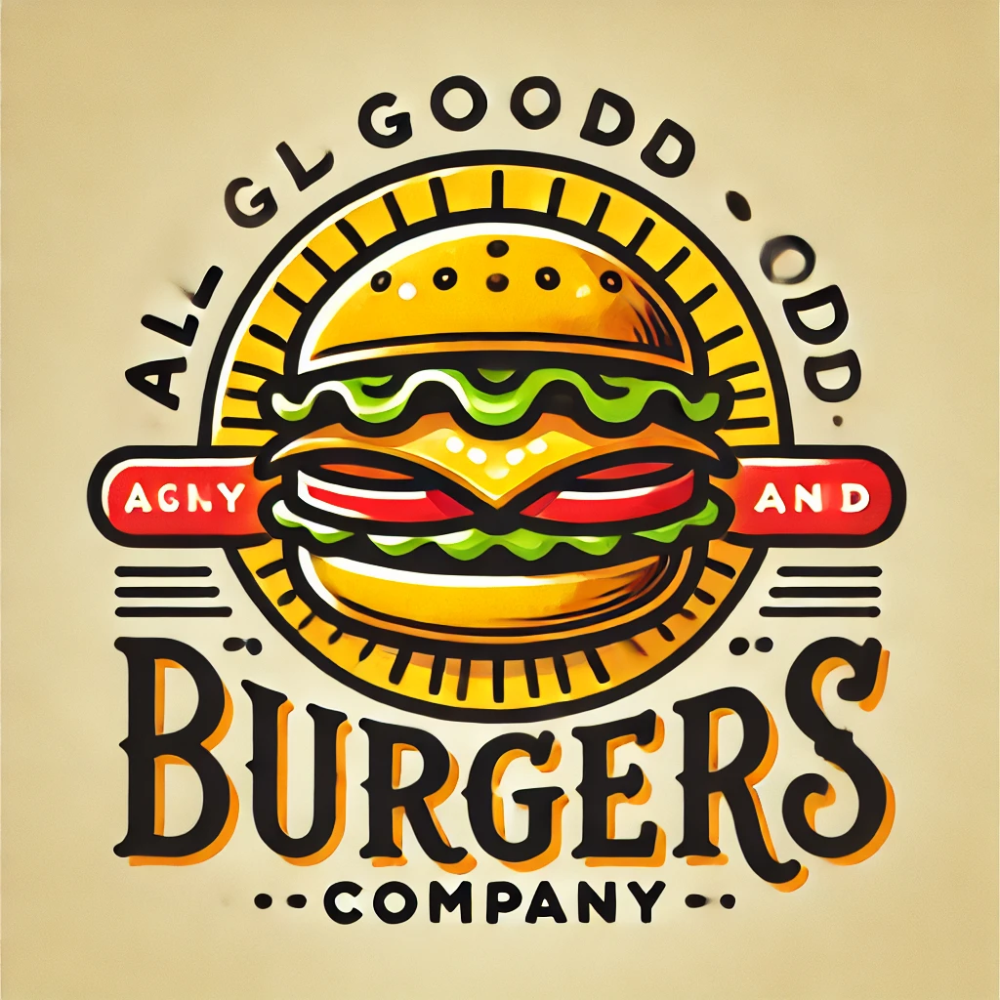

Hello, I'm Pranav Dhongade
Software Engineer
View My WorkFeatured Projects
Algorithms
TravellingSalesMan
Technologies Used : Java, JUnit 5
The aim of this project is to implement and evaluate different algorithms for solving the TSP problem. We will explore various algorithms, including Christofides algorithm, 2-opt, 3-opt, genetic algorithm, and Simulated Annealing optimization, and compare their performance in terms of time and space complexity
View ProjectCloud Computing
Cloud Emailing Service
Technologies Used : Google Cloud Pub/Sub, Google Cloud Functions, Mailgun API, GCP, Node.js, Packer, Github Runner
Launched a compute instance template with a health check, set up a managed instance group with a load balancer, and developed an automated system for sending verification emails to new users by implementing logic to publish messages to a Google Pub/Sub topic, configuring a serverless function triggered by Pub/Sub messages, and utilizing Mailgun for email delivery
View ProjectAdvanced Big Data Indexing
Hospital Medical Plan Management System
Technologies Used : Google Cloud Pub/Sub, Google Cloud Functions, Mailgun API, GCP, Node.js, Packer, Github Runner
Designed a web application with REST APIs to manage hospital medical plan orders using Spring Boot, integrated Spring DAO with Hibernate for efficient database access, created indexes and mappings in ElasticSearch for fast data retrieval and visualized on Kibana, utilized RabbitMQ for asynchronous plan transactions, and implemented Redis for caching.
View ProjectWeb Design And User Experience
Car-O-Pedia
Technologies Used : Google Cloud Pub/Sub, Google Cloud Functions, Mailgun API, GCP, Node.js, Packer, Github Runner
Implemented a full-stack car rental application using the MERN stack (MongoDB, Express.js, React.js, Node.js), with user authentication, data validation, API integration, secure Stripe payment gateway, and Docker for containerization and deployment
View ProjectDesign Patterns
AllGoodBurgers
Technologies Used : Google Cloud Pub/Sub, Google Cloud Functions, Mailgun API, GCP, Node.js, Packer, Github Runner
The Restaurant Management System is designed to streamline the operations of a restaurant by automating tasks such as managing the menu, handling customer orders, tracking table statuses, and facilitating payment. The system is built to be scalable and flexible, allowing for future enhancements as the business grows.
View Project